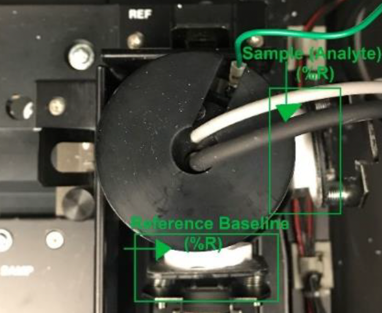

Hitachi UH-4150 Spectrophotometer
History
- Initial: 2015, Thomas Gredig
- Updated: 11/25/2022, Andy Huang
Safety Precautions
- Be sure to read the instruction manual and keep nearby as reference when needed. An electronic version is in the desktop folder Standard Operation Procedure.
- Be sure to observe all the hazard warnings attached to the instrument or provided in the manual. Failure to do so may result in personal injury or damage to the instrument!
- When using chemicals for the instrument be sure to provide proper ventilation in the room. Please refer to Material Safety Data Sheet (MSDS)!
- Use the spectrophotometer ONLY for the intended usage. Any other forms of usage may result in personal injury or damage to the instrument!
- ALWAYS close the hood to prevent dust from getting into the detectors.
- ALWAYS place the unused sample on the lab bench and NEVER inside the spectrophotometer.
- If an abnormality occurs such as unusual noise, odor, fumes, or gas leakage immediately disconnect power to the instrument!
- Avoid smoking or using a flame in the vicinity of the spectrophotometer!
Spectrophotometer Procedure
- Log into the computer
- Record the following on the Logbook for using UH-4150 Spectrophotometer:
- Operator: Name of the person who is operating the measurement
- Date/Time: Enter the time and Month/Day/Year
- Data Mode: Enter either, (%T) Transmittance, (%R) Reflectance, or (Abs) Absorbance
- Define Sample Name Format: YearMonthDay-Project-Initial of Operator-Sample-Type of experiment (Example: 20221217-NOptics-AN-20151111NM CuPc 25 GL 150-%T)
- Click the Power on the UH-4150 Spectrophotometer
- Click on the UV Solutions 4.2 software on the desktop
- The program will then proceed to initializing gauge, the system will begin to self-diagnose RAM, ROM, Wavelength drive mechanism and etc
- Upon completion a Ready will appear on the right-side window
- Set up analytical conditions: Click the
on the vertical toolbar on the right-hand side of the screen - General tab:
- Measurement: Wavelength scan
- Operator: Name of the person who is operating the measurement
- System: Integrating sphere
- Comments: Any comments about the sample or data acquisition (Optional)
- Use Sample Table: Either check or uncheck (Optional) (Notice: Recommended for running multiple samples under the same experimental condition.)
- Instrument tab:
- Data mode: %T (Transmittance), %R (Reflectance), and Abs (Absorbance), E(S) (Energy on the Sample Side), (E(R) (Energy on the Reference Side) (Notice: E(S) and E(R) checks the energy source alignment or signal amplifier for the instrument.)
- Start/End Wavelength: Enter the wavelength for the measurement (Notice: The machine will go from high wavelength to low wavelength, so the start wavelength is higher than the end wavelength. The range for the wavelength limit is 200-2600 nm. A general range is 200-800 nm)
- Scan speed: Enter the scan speed for the measurement (Notice: A slower scan speed is better measurement, a general setting is either 120 or 300, and a good scan pick is either 3 or 15.)
- High resolution: OFF, only turn ON if the measured spectra have a steep signal
- Baseline Correction: None
- Delay: 0 s
- Zero measurement before each run: Leave box unchecked
- Attenuation: None
- Lamp change mode: Auto
- Lamp change wavelength: 370 nm
- W1 lamp/D2 lamp: On
- Slit width: Fixed 4 nm
- PMT mode: Auto1
- Sample interval: Auto
- Replicates: 1
- Monitor tab:
- Y axis Min/Max: Set Min/Max values of the coordinate axis in the monitor window (Notice: The general setup is fine; this can be auto scaled to fit data during collection.)
- Open data processing window after acquisition: Checked
- Processing tab: Peak Finding
- Integration method: Rectangular
- Peak finding: Sensitivity: 1 for sharp peak, 8 for broad peak
- Threshold: 0.01 (Notice: The threshold and sensitivity can be adjust as needed, but general defaults are fine.)
- Click OK to close the method window
- Set up analytical conditions: Click the
- Performing Baseline Correction Measurements
Open the hood on the spectrophotometer and insert the Baseline Reference on the designated areas
- For %T (Transmittance) and Abs (Absorbance), put the Baseline Reference in both positions between the clip (Figure 1)

Figure 1: Setup baseline reference for %T and Abs in the integrating sphere. - For %R (Reflectance), put the Baseline Reference between the back of the Integrating sphere and in front for both BaSO4 plate (Notice: The BaSO4 plate is suspended by the clips and is FRAGILE, so handle with care!) (Figure 2)
Figure 2: Setup baseline reference for %R in the integrating sphere. - Close the hood on the spectrophotometer and click
on the vertical toolbar, choose any User in which the baseline correction will be applied. Then the machine carries out baseline measurement. (The %T (Transmittance) and the %R (Reflectance) on the right-side bar cannot be adjusted to 100%. If the instrument is not performing correctly, contact the service engineer in Additional Information.) - When the Baseline process is done, click on
, and on the instrument tab, under Baseline Correction select the User that was saved - Click OK to close the method window
- Loading Sample (Analyte)
Open the hood on the spectrophotometer and insert the Sample (Analyte) on the designated areas
- For %T (Transmittance) and Abs (Absorbance), remove the Baseline Reference from the
and insert the Sample (Analyte). (Notice: Baseline Reference is remained in the cell holder!) (Figure 3)
- For %T (Transmittance) and Abs (Absorbance), remove the Baseline Reference from the

ii. For %R (Reflectance), remove Baseline Reference from the right side and insert the Sample (Analyte). (Notice: Baseline Reference is remained in the cell holder!) (Figure 4)
b. Close the hood on the spectrophotometer and click <Sample> on the vertical toolbar to define the sample by giving a filename using the format and saving destination (Notice: If the Sample Table is checked before the measurement, specified in the Analysis window, proceed to ii and then step 9)Not using a Sample Table
- Define Sample Name Format: YearMonthDay-Project-Initial of Operator-Sample-Type of experiment (Example: 20221217-NOptics-AN-20151111NM CuPc 25 GL 150-%T)
- Comment: Briefly describe the sample and measurement (Optional)
- Destination: Choose Select Folder (Recommendation: Create a folder under Document, named it with
name. Do not save any data on the Desktop!) - Click OK to close the window tab
- Using a Sample Table
- Open the Monitor window and click on
button - Enter # of samples and click
button to create a new sample table - Enter each sample based on the sample name format: YearMonthDay-Project-Initial of Operator-Sample-Type of experiment (Example: 20221217-NOptics-AN-20151111NM CuPc 25 GL 150-%T)
- Create folder for the table
- Click OK to close the window tab
- Click
on the vertical toolbar to begin the measurement (Notice: To abandon the measurement, click the button) - After the measurement is completed, the data is automatically saved under Destination folder with the Sample Name
- IMPORTANT: DO NOT CHANGE EXPERIMENTAL CONDITIONS! Only swap samples after the completion of each measurement, see 8. Loading Sample (Analyte) (Notice: If a new experimental condition is performed, then this requires a new Baseline Correction Measurement! See 6. Performing Baseline Correction Measurements)
- Proceed to back-up the data on a flash-drive
Shutdown Procedures
- Check the integrating sphere cell holder is EMPTY and the inside surrounding is CLEAN
- Click on the
button and select the command - After a dialog appears, choose the option
, then click button and the UV Solutions 4.2 window will then proceed to close - Click the Power button on the spectrophotometer main unit
- Log the time out on the Logbook
Additional Information
For any technical issue on the instrument contact the following: Sr. Field Staff Engineer: Kong K. - Toll Free: (800) 548-9001